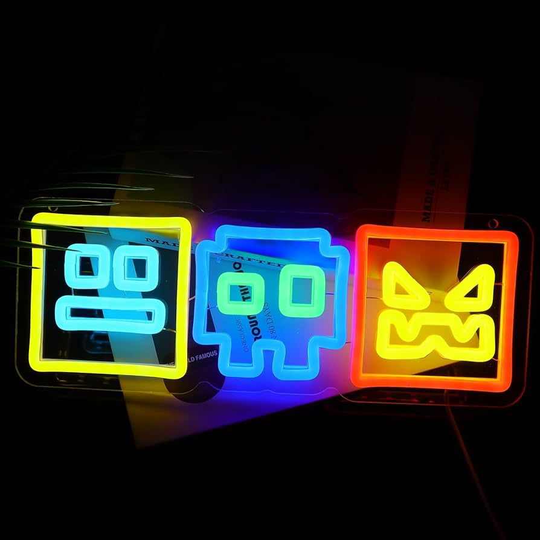

Ви усе таки знайшли секретне посилання, яке я заховав на сторінці, де я про це згадував, ой, забув сказати, перед цією сторінкою відбулася помилка, яку я не можу виправити, щось типу глітча, але радий, що ви їх подолали!
Дякую за відвідування сайту, якщо ви справді чесно знайшли посилання на цю сторінку - то ви будете згадані у лідерборді, наразі він у стані розробки, через те, що ще ніхто не зміг сюди дістатися, бажаю вам терпіння на очікування лідерборду, бо щоби ви знали, я лінивий
На сьогодні, найважчий рівень, який я коли небудь пройшов у Geometry Dash є Jawbraker by ZenthicAlpha. Я його пройшов доволі неочікувано: я його дуже довго тренував, проходив останні частини, навіть пробував проходити у практиці - проходив майже з 1 разу, а коли приступав до проходження - вмирав на останніх процентах (80-90%). Я уже тоді був готовий здатися, але завдяки моїй впертості, я його усе таки допройшов. Ви спитаєте: Невже так просто? Ні - я усе таки цей рівень закинув, не витримав я, вирішив перепочити... Так вот, я через 2 дні просто по-пріколу вирішив перевірити, наскільки тепер я просунуся, і як на диво, я його пройшов!
Також, до цього моменту, поки я створював цю сторінку, я набрав цілих 84% на рівні CraZy. Я надіюся, що коли небудь допиляю його, але на жаль, це станеться тоді, коли я зроблю цю сторінку. Чому на жаль? - тому, що я лінивий, як ви знаєте з послання вище, так що якщо це і станеться, то я відразу не піду перероблювати сайт, я усе таки оновлю, але допишу ще і дату. І так, я роблю ці камбеки на 60гц моніторі, і ще на 120гц екрані телефону, так що будь який рекорд для мене - маленька перемога.
Рівень, який я пройшов перед Jawbreaker являється Bloodbath Z. Ви навіть і не уявляєте як це було складно, особливо на мобілі з малим екраном, хоч і 120 герцовим. Я помирав вічно в кінці, вічно на спамі, вічно на мічігані (парт, який назвали на честь дуже поважного гравця у Geometry Dash, який помер по невідомим причинам - Michigan). Я, коли пройшов його, так зрадів, бо хоч це тільки і медіум демон, він достойний і на сьогодні.
Не знаю, чи є сенс розказувати усі 10 рівнів-демонів, які я пройшов, але скажу 2, які для мене стали революцією. Мій перший медіум демон - це стало найреволюційніше у моєму житті. Я дуже довго просто пробував проходити ізі-демони, але мені хотілься чогось більшого, так я і пройшов B , не заплутайтеся - B - це назва рівня, точно не випадкове натиснення букви. після пів року перерви від першого ізі-демона я нарешті почав бачити якийсь прогрес у своєму профілі, це був, я так надіюся єдиний рівень, який я пройшов на перерві перед фізикою чи якимось іншим уроком у школі. Цей демон став останнім перед великим стрімким ростом мого скіла...
Перший ізі-демон, як я тоді був щасливий, тоді, я перший раз побачив сенс і відповідь на питання: Чому Geometry Dash така популярна. Це був рівень Platinum Adventures. Скажіть, чи є сенс розказувати про всі демони?